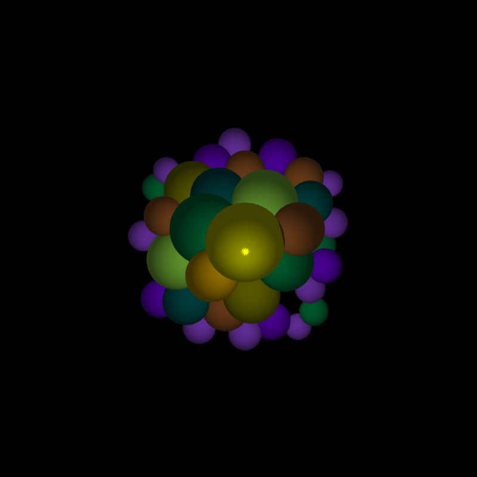

Overview
This project aims to create a create a basic ray tracer that can simulate the effects of reflection and refraction on basic geometric objects. In nature, light travels in rays that interact with surfaces by absorption, refraction, and reflectio and when these rays enter our eyes the interaction with surfaces determines the image of the scene. A ray tracer captures this interaction by simulating the rays and following them around the scene. When an interaction occurs, new rays are recursively created and followed to find out information such as the amount of reflection, refraction, and shadow. This makes it much simpler to compute this information compared to a typical scanline renderer and creates much more realistic images.
Manual
Once all the code is loaded a few things must be set up before rendering a scene. The global variable *vp* must be set up as an instance of the view plane class. Once this object has been created its sampler points must be generated.
Next our camera must be created and initialized. This is done by setting its eye and lookat positions as well as the distance from the eye to the viewplane. After that its uvw axes can be generated and the camera is now set up.
Following that we can now add different scene objects to scene such as an ambient light, point or directional lights, as well as the geometric objects of our scene. Once our scene is created we can render it with the following command:
(render-scene *camera* pathname) where pathname is the path to the file we wish to render the image as such as "~/". The image will be drawn to that specified file and it's done. (reset-scene) can be called to remove all lights and geometric objects so you can render another scene.
Example scenes can be found in the build directory of the project.
Screenshots
An image showing off perfect specular reflection.
An image showing off glossy specular reflection.
References
- Physically Based Rendering: From Theory to Implementation Matt Pharr, Greg Humphreys Morgan Kaufmann, 2010